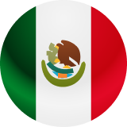
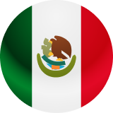
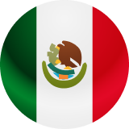

Luis Erick Muñoz
Mexicano con +3 años de experiencia como diseñador de productos digitales con foco en el usuario.
UX & UI Product Designer

Mexicano con +3 años de experiencia como diseñador de productos digitales con foco en el usuario.
UX & UI Product Designer
Soy un diseñador de productos digitales especializado en UI y
UX,
con más de 3 años de
experiencia, enfocado en investigación, interpretación de métricas y diseño centrado en el
usuario.
En mis tiempos libres me gusta escuchar música electrónica y jugar futbol soccer o hacer
deporte.
Mi deseo profesional a largo plazo es ser creador de contenido y ayudar a futuros
diseñadores a
cumplir sus sueños.
Herramientas que domino
Figma
Miro
Notion
Hotjar
Microsoft Clarity
Maze
Zeplin
Experiencia
Semi-senior (+3 años)
Modalidad
Full time, 100% Remoto
Industria
EDtech, Fintech, B2B o B2C
Retorna App
1 año • Full time, Remoto
Principal UX/UI Designer
Dic. 2022 - Ene. 2024
Fuí parte del equipo de producto y UX de
Retorna.
Algunas de mis responsabilidades y logros mas importantes fueron:
1. Creación y apoyo del nuevo diseño de la aplicación móvil, proponiendo nuevas
tendencias visuales y redefiniendo flujos al máximo, logrando optimizar el
proceso de envío y reduciendo el Churn.
2. Creación y soporte de nueva versión de sistema de diseño y sistema de
arquitectura visual, logrando consistencia en un 100% de las UI y mejorando los
tiempos de creación de interfaces hasta en un 70% mas rápido.
3. Creación del diseño de la nueva plataforma Web totalmente responsiva, una
versión que puede funcionar desde el navegador, y apto para dispositivos Desktop
y Mobile.
Investigación
Documentación
User Flows
Prototipado
Copywriting
Design System
Testing
HTML
CSS
Plaeto
8 meses • Full time, Remoto
Freelance UX/UI Designer
Mar. 2022 - Oct. 2022
Fuí parte del equipo de producto, y mis
responsabilidades fueron:
1. Crear y mantener en contante actualización el Sistema de diseño del proyecto
para versiones Mobile y Desktop.
2. Proporcionar entregables a modo de Hand-off a desarrolladores para evitar
errores de comunicación en implementación final.
3. Supervisar que las interfaces UI estén correctamente maquetadas.
Supervisé temporalmente a un nuevo integrante del equipo de UX.
Investigación
Documentación
User Flows
Prototipado
Copywriting
Design System
EDteam
11 meses • Full time, Remoto
Diseñador UX/UI
Sept. 2021 - Abr. 2022
Fuí parte del área de producto, organizando,
colaborando y asesorando con front-end la correcta ejecución de los entregables
UI.
Algunos proyectos importantes fueron:
1. Colaboración en la creación de guías de estilo y sistema de diseño de EDteam
que
aumentó la productividad del equipo de UX hasta en un 50%.
2. Estructuración de recursos y estilos durante campañas relevantes
(Blackfriday,
Navidad, Año Nuevo, SDT2022).
3. Diseño y planeación del plan para equipos (ofrecer licencias a nivel
empresarial) pasando por etapas de Research, Benchmarking, Sketching,
Wireframing y Mockup.
Investigación
Documentación
User Flows
Prototipado
Copywriting
Design System
Testing
Pasante UI
Jul. 2021 - Sept. 2022
Realicé unas prácticas con un periodo de prueba
de hasta 2 meses.
Desempeñé las siguientes funciones:
1. Apoyo en la creación de la primera versión de las guías de estilo y sistema
de
diseño de EDteam.
2. Ofrecer nuevas mejoras e ideas dentro de la plataforma de EDteam.
Participación en el armado de Landing Pages y sitios web “Marketeras”.
Documentación
Prototipado
Copywriting
Design System